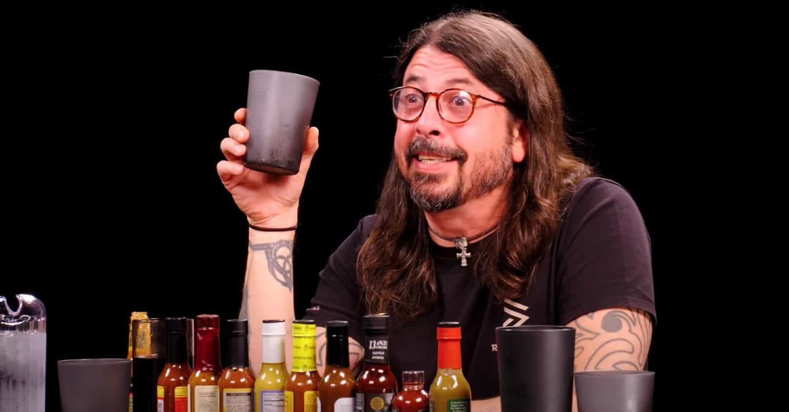

16 Dave Grohl Interviews That Prove He's The Nicest Guy In MusicBy Dom Mitrano published 1 November 2023"Dave Grohl is someone who seems to transcend the very thing that he’s most known for. You may not be a fan of rock music but there’s a good chance you still know him. Whether he’s on the news because he was cooking barbecue for 24 hours straight for Hope the Mission in LA, or he told a hilarious story in an interview, or maybe you have a friend who bumped into him at a school fundraiser. Many people online have described him as “The Keanu Reeves of music” or “An ordinary guy in an extraordinary position.” Regardless if you love the Foo Fighters or not, it’s undeniable that Dave Grohl is one of the nicest people in the business." |

3 Songs for People Who Say They Don’t Like Foo FightersBy Jacob Uitti published 9 June 2024When Kurt Cobain killed himself in 1994, all of a sudden one of the greatest bands in the world was over. Nirvana was done, sadly. But the band’s drummer Dave Grohl still had a lot of music left in him. So, when the dust had settled, Grohl started to write his own songs—tracks he would sing and play guitar on and perform." "Originally created as a one-man solo project, Foo Fighters quickly blossomed into a full band once Grohl proved to be a talented composer. He released the band’s self-titled debut LP in 1995 and the sophomore follow-up The Colour and the Shape in 1997. Along the way, Foo Fighters became one of the biggest bands on Earth and created some truly indelible songs. Here below are a trio of those." |

Foo Fighters, Noah Kahan to Headline Inaugural Soundside Fest in ConnecticutBy Tomas Mier published 14 May 2024"A (sorta) new music festival has entered the chat: On Tuesday, Soundside Music Festival announced that Foo Fighters and Noah Kahan will headline its first-ever festival in Bridgeport, Connecticut this September." |
Foo Fighters Launch 2024 TourBy Corey Irwin published 2 May 2024“Foo Fighters returned to the road with the launch of their 2024 Everything or Nothing at All tour on May 1 in Dallas." |
Foo Fighters Wanted to Rule Rock. 25 Years Later, They’re Still Roaring.By Jeremy Gordon published 1 Feb 2021“Dave Grohl and his bandmates are called upon whenever rock music with joy and gravitas is required. Now they’re releasing an album with a twist." |
Foo Fighters review: Jack Black stuns fans with surprise guest appearanceBy Alanah Eriksen published 21 January 2024““It’s not often an earthquake is triggered by a rock band,” Dave Grohl proudly told a bursting-at-the-seams Mt Smart last night. The Foo Fighters frontman was referring to the “seismic event” the band famously caused when they played in Auckland in 2011. But their efforts last night sure gave it a good go for a repeat. Grohl uttered the line every local crowd wants to hear - “You were the loudest audience we’ve ever had.”" |